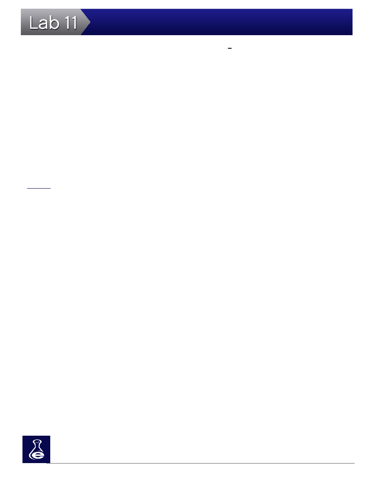

189
Mitosis and Meiosis
which occurs during the S phase because it is when new DNA is synthesized (synthesized starts with s). When the full set of DNA is replicated, two identical copies of each chromosome exist in the parent cell. These identical copies pair up and are referred to as sister chromatids. Sister chromatids exist as chro-matin during interphase. These structures don’t condense into chromosomes until mitosis. A structure called the centromere pairs the sister chromatids, forming the traditional “X” shaped of the chromosome. The centromere is the site of spindle fiber attachment later in cell cycle division.
After the DNA is fully replicated, the cell engages in “proofreading” and additional protein production (G
2
). In
this process, proteins involved in DNA replication (such as DNA polymerase) review the replicated content
and correct any errors which may have been made during replication. G
1
and G
2
are also responsibly for
initiating a variety of checkpoints which verify that the size and environmental growth factors are sufficient
prior to entering mitotic division.
 Cell Division
Cell Division
Mitosis
Mitosis follows interphase. Sister chromatids segregate into two daughter cells during mitosis. The four
stages of mitosis are described below:
•
Prophase: DNA condenses into chromosomes. Centromeres attach themselves to coiled (condensed) sister chromatids to hold their structure together. The nuclear envelope of the par-ent cell breaks down. Pairs of centrioles, which serve as cellular anchors during division, appear at the mitotic spindle, located at the cellular poles at separate sides of the cell.
•
Metaphase: Sister chromatids migrate towards the metaphase plate. Microtubules (long strands) grow from the centrioles and link together while attaching to each pair of sister chroma-tids. The orientation of each pair of sister chromatids is independent from all other pairs. This means they can “flip flop” as they line up, effectively shuffling their genetic information into new combinations
•
Anaphase: The microtubules attached to the centromeres shorten This causes the sister chro-
matids to separate and move toward opposite poles of the parent cell. At this point, each sister
chromatid is now an individual chromosome. Microtubules attached to other microtubules from
the opposite pole lengthen, effectively elongating the cell.
•
Telophase: One set of chromosomes arrives at each pole. A new nuclear envelope begins to form, chromosomes are uncoiled back into chromatin, and a new nucleus is formed at each end of the cell.
Cell cycle division concludes with cytokinesis. During animal cell cytokinesis, the plasma membrane of the
cell furrows inward and encloses around each nucleus, creating two, diploid daughter cells.